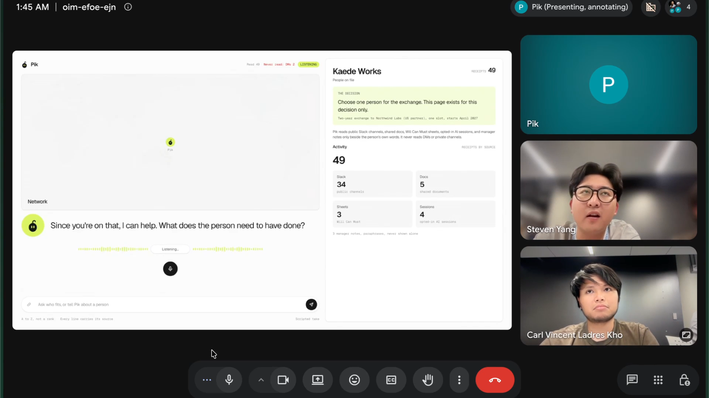

Who is the best person for this? Answered from what people actually did, with the receipt attached.
hyderabaddies
Carl Kho, Steven Yang
September 27, 2026
02 Problem
At Recruit Holdings, AI is dissolving job categories, yet who does what next is still decided from a sheet, a paraphrase and memory.
Who
HR and line managers deciding placement, promotion, exchange and mentor picks, and the people decided about.
What
Will is asked, never measured: an HR leader has no metric for it, and matching runs on intuition. So the evaluated build the case themselves, a deck a year.
Why it matters now
AI is dissolving job categories. Teams form around who wants and can do the task.
80.9% of employees in Japan use AI at work. Recruit Management Solutions, Jan 2026, n=1,429
Why current options fall short
AI skill tags drift and end in intuition. Evidence in Slack and documents goes unused: one-sided use is unaccountable, “really creepy”.
03 Inspiration
The evidence already exists. What was missing is a page the employee can see too.
What we observed
“I create a presentation of all the things that even my boss didn’t see.”
a product leader, 30 to 40 reports
A former leader of 150 engineers ran a calibration room: 5 to 10 managers pitching 150 people from memory, “easily 4 or 5 days per quarter”.
What it revealed
「理屈上は使えます。説明責任、透明性。」“In theory we can use it. Accountability, transparency.”
a head of HR, on why the company’s own Slack data stays unused
The company could read its own Slack and still would not. The blocker is accountability and transparency toward the employee, not data and not law.
Why it unlocks the solution
“They want to maintain their culture, they want to stick with their own rules of evaluation.”
a former leader of 150 engineers
Every leader keeps their own rules. So: the same receipts on the same page for both sides, in the customer’s own rubric. Pik adds only provenance.
04 Solution
Pik answers who is best for this, where you ask, with the receipt attached.

Demo, 90 s. Click to play with sound.
Who it is for
The team lead forming a task force. The HR planner staffing it. The person named, who sees the same page.
How it works
Ask where you already are: in the Meet, in Slack, on the ticket.
Pik names the person and attaches the verbatim receipt, from allowed sources only.
The person named sees the same page and can answer before the decision.
04 What changes
Workers do the work.
Managers decide from receipts.
Nobody is scored.
05 Impact
51.2%
of HR staff in Japan say their company’s way of placing and transferring people needs rethinking. The top reason: a mismatch between people’s skills and the work they are given.
Recruit’s own measurement of the problem Pik answers.
51.2% of n=2,761 HR staff at companies with 30+ employees, surveyed 2023-03-29 to 03-31
Source: Recruit Co., Ltd., 企業の人材マネジメントに関する調査2023 人材配置・異動編, published 2023-09-26
The outcome: an employee who made an internal move has a 75% chance of still being there at two years, versus 56% without one.
Source: LinkedIn Workplace Learning Report 2023; the percentages are chart values on the report’s career-pathing page
TAM
Talent management software, global, 2025: $11.3B
Source: Fortune Business Insights, 2025 base year
SAM
Japan HRTech cloud, FY2024: ¥138.5B, about $0.92B at an assumed ¥150 per USD
Source: Deloitte Tohmatsu MIC Research Institute, HRTechクラウド市場 2025年度版
SOM
45,586 Recruit Holdings employees × $8 per seat per month × 12 = $4.4M / yr. Japan only: 12,709 × $8 × 12 = $1.2M / yr
Sources: S&P Global via stockanalysis.com (2026-03-31); recruit.co.jp/company/profile (2026-04-01); $8 = Lattice Goals list price, list runs $4 to $10
06 What makes it different
Score tools grade you in secret. Pik shows the receipt to both sides.
The person named sees the same page
The person sees a score about them, or nothing
Reads typed profiles
Reads what people actually did
Microsoft 365 People Skills
Infers skill tags from activity; the person confirms or rejects a tag, not the evidence. GA 2025.
Pik
The verbatim receipt with its source, no score, and the person named sees the same page as the asker.
Lattice
Scores from typed reviews; $4 to $10 per seat
Kaonavi, Talent Palette, SmartHR
HR-entered databases; Talent Palette ranks placements
Workday, Gloat, Eightfold
Ranked matches; Eightfold’s score runs 0 to 5
Glean expert search
Ranks experts from documents, opaque, no page
Microsoft Delve: who worked on what; retired 2024-12-16
Hard to copy: a score product would have to unwind its own output. The rest is the customer’s own data access and the customer’s own rubric.
Sources: lattice.com/pricing; learn.microsoft.com, Delve retirement; support.microsoft.com, AI transparency in People Skills; eightfold.ai engineering blog, Match Score; docs.glean.com, expert search; pa-consul.co.jp, Talent Palette AI自動配置
07 Technical design
The model extracts and cites. Software checks the quote against the source. A human decides.
Stack: Python 3 stdlib server · one HTML page with d3 · google-genai on Vertex AI (Gemini 3.8 Flash extracts, Gemini 3.8 Live listens) · sounddevice · slack_bolt · notion-client
08 Roadmap
Recruit first. Then every floor where the question is who has done this.
Near term
Recruit Holdings: a pilot in Japan with one HR team, one decision type, their rubric.
Medium term
Where the daily question is who has done this: hospitals (surgeons), airlines (crews), construction (project staffing).
Long term
Recruit’s network into the Western market through Indeed and Glassdoor.
Because the future of your work depends on who you Pik.
github.com/syang0624/hyderabaddies
Appendix
A1 Data policy
A6 Deployment and security
A2 Is that a score?
A7 Pilot plan and metrics
A3 What if it is wrong?
A8 Competitors in detail
A4 What is real in the demo
A9 The interviews
A5 Japanese and English
A10 Inspiration, alt
A1 Data policy
What Pik reads, and what it never reads.
Read, under an allowlist and a purpose lock
- Public Slack channels
- Shared documents
- Will Can Must sheets, already shared with HR by the employee
- Manager notes, shown beside the person’s own words, never instead of them
- AI assistant session summaries, only where the person opted in
Never read
- Direct messages
- Private channels
- The audit counts them from a manifest: file, count, hash. Nothing is opened.
The page exists for one named decision and is deleted when it is made. Every add, edit or removal of a person record is logged: who asked, what they said, what changed.
A2 Is that a score?
No. It is coverage of the ask by a person’s own receipts.
coverage = words of the ask with a receipt from this person ÷ words in the ask
“2 of 7 words in the ask have a receipt from this person.” That is what the engine computes, per person, for this ask only.
- Never sorted into a rank shown to the person. Tiles are listed A to Z.
- Never turned into a number about the person. It changes with the ask, not with the person.
- The receipts under it are verbatim and carry their source id.
A3 What if it is wrong?
The person sees the same page and can contest a line before the decision.
Before the decision
- The person named opens the same receipts, no other names.
- A note box on every line. The note lands on the evaluator’s page.
- Her manager wrote “flexible on location”. She wrote “I want to work with the US product team”. Both are on the page.
Inside the pipeline
- One claim = a source id + a verbatim quote.
- Software checks that the quote is in that source. If not, the claim is dropped.
- The count of dropped claims is shown in the footer of the page.
A4 What is real in the demo
The company is fictional. The pipeline and the surfaces run in the repo.
Fictional, generated fixtures
- Kaede Works, 200 people. Not a real organisation.
- 34 public Slack messages, 5 documents, 3 Will Can Must sheets, 3 manager notes, 5 session summaries (4 opted in), 2 DMs never read
Running, in the repo
- The Meet listener (Gemini 3.8 Live), the extraction (Gemini 3.8 Flash, or keyword mode offline)
- The Slack bot, the Notion watcher, the page. Templated: the memo.
 Slack: the answer in a thread
Slack: the answer in a thread Notion: the ticket fills itself
Notion: the ticket fills itselfA5 Japanese and English
The listener reacts in English, Japanese and Korean. Receipts stay in their own language.
誰が英語で会議をリードできる？
“Who can lead a meeting in English?” The ask’s words are mapped onto the company’s own skill tags; the engine does the rest.
- A receipt is never translated. It is the person’s own sentence, in the language they wrote it.
- Pik speaks only when addressed by name, or when it has one clarifying question.
A6 Deployment and security
Inside the customer’s Google Cloud project. Nothing leaves.
- Runs in the customer’s own Google Cloud project on Vertex AI: Gemini 3.8 Flash for extraction, Gemini 3.8 Live for the meeting.
- The pilot runs on one laptop from the customer’s exports. No new store of people data outside the project.
- Sources are allowlisted per decision; a purpose lock names the decision the page exists for.
- Every add, edit or removal of a person record is logged: who asked, what they said, what changed. Drafts are never logged.
A7 Pilot plan and metrics
One HR team, one decision type, one real cycle. Three measures.
Plan
- One HR team in Japan, one decision type (placement or the exchange slot), their rubric and taxonomy, their real exports.
- Announced to the people concerned first: which sources, which purpose.
- A human concludes. Pik never names a person the engine did not return with a source.
Measured on one real cycle
- Dropped-claim share: claims the validator rejected ÷ claims proposed.
- Contest rate: lines the person named annotated ÷ lines shown.
- Evaluator minutes per decision, before and after.
A8 Competitors in detail
Who reads what, who scores, and what the person sees.
| Reads | Produces | The person sees | |
|---|---|---|---|
| Lattice | Reviews, goals, surveys; $4 to $10 per seat per month, $4,000 minimum | Performance and engagement scores, AI risk flags for managers | Their own review; not the calibration or the flag |
| Microsoft: Delve, Viva Topics, People Skills | Office 365 documents, Microsoft Graph activity and profiles | Delve retired 2024-12-16; Viva Topics retired 2025-02-22; People Skills (GA 2025) infers skill tags, no score | Tags to confirm or reject; inferred and confirmed stay visually distinct |
| Workday, Gloat, Eightfold, Fuel50 | HR records and typed, résumé-style profiles | Skills ontologies and scored matches; Eightfold’s Match Score runs 0 to 5 | Their profile, not the shortlist or the ranking |
| Glean expert search | Documents, tickets, contributions | A ranked list of experts, opaque | Nothing; no page of their own |
| Kaonavi, Talent Palette, SmartHR | HR-entered profiles and evaluations | Talent Palette: placement proposals by match degree | Not stated |
| Pik | What people wrote and did, in allowed sources only | The person and the verbatim receipt; coverage, never a rank | The same page as the asker; can contest a line |
Sources: lattice.com/pricing; learn.microsoft.com (Delve retirement; Viva Topics changes); support.microsoft.com, AI transparency in People Skills; workday.com Skills Cloud; eightfold.ai engineering blog; docs.glean.com expert search; pa-consul.co.jp Talent Palette.
A9 The interviews
Five conversations, about three hours twenty minutes, Friday and Saturday.
- A head of HR, with an interpreter: 72 minutes
- A product leader with 5 to 6 product managers and 30 to 40 people: 48 minutes
- A recruiter in new-graduate global talent acquisition: 40 minutes
- A mentor, formerly a manager of 30 to 40 and a leader of up to 150 engineers: 25 minutes
- A software engineer on a job-board team: 14 minutes
Interviewees appear by role only. Figures quoted are the speakers’ own past organisations unless a source line says otherwise.
03 Inspiration, alt
Read in the order they come to mind, or laid out flat with the source on every line.
“It is difficult to search from the big data, so basically we depending based on our human knowledge.”
a recruiter, on how the one insider who has done this is found today